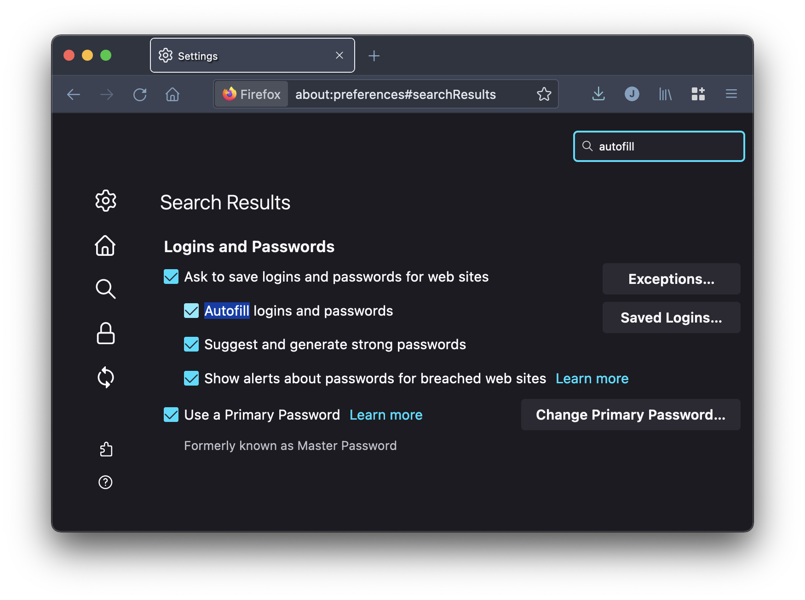
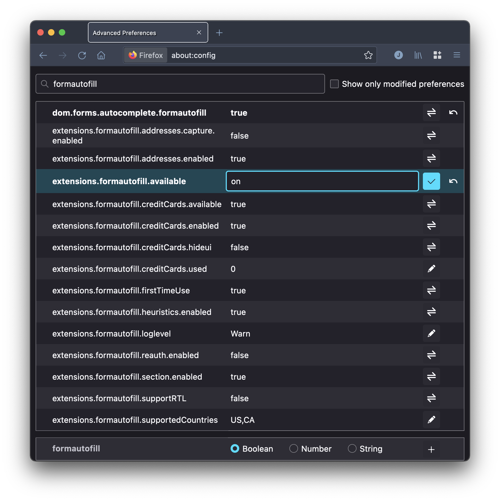
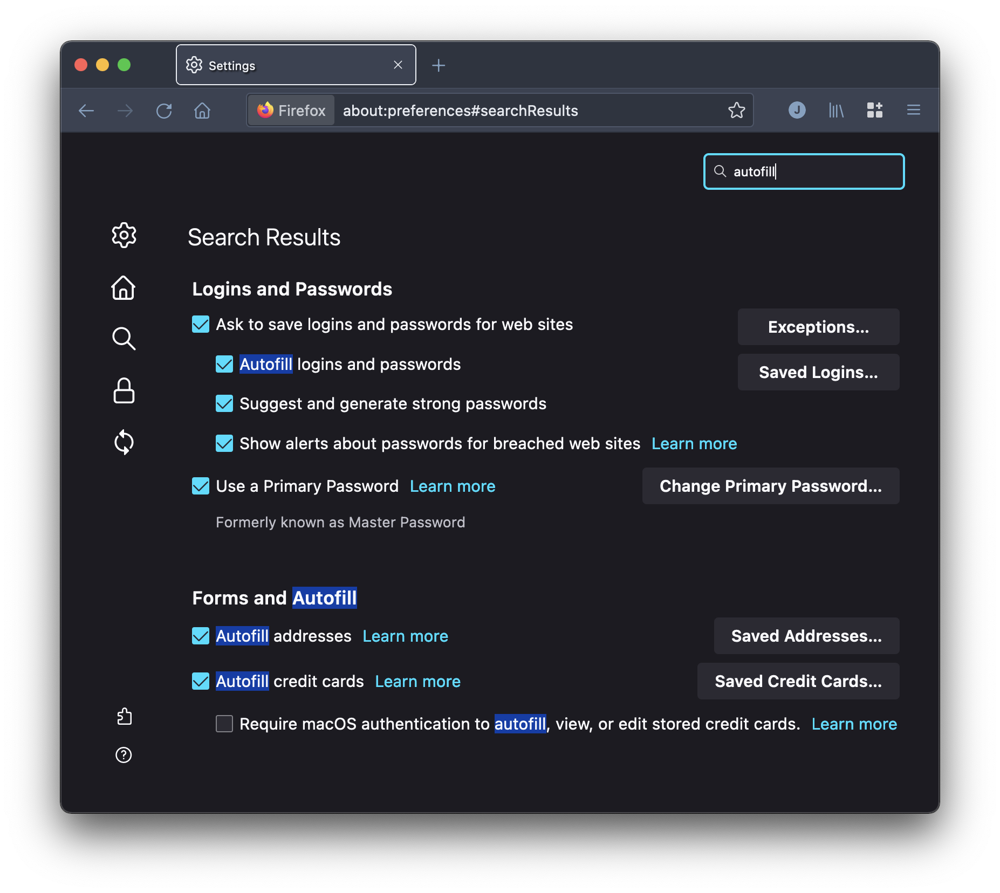

How to enable Firefox form autofill outside the US
For some reason that I do not understand Firefox does not autocomplete forms if you don't live in a particular geografic location. To me that is a huge limitation to the browser and this article is about how to fix this.
Form autofill for details like address, name or phone is a feature that is very common with other browsers however apperently if you dont live in the US or Cananda Firefox will have that disabled by default. Firefox mentions it in their documentation. In fact if you are outside the US and search for autofill in the settings page of Firefox you will not even find the option.

Here are the steps to get autofill enabled:
- Enter
about:configin the address bar to see advance preferences. - Seach for
formautofill

- Set
extensions.formautofill.availableto"on" - Add your country code to the supported countries section. (You can find it if you search for
regionin the Advanced Preferences page.) - Quit and restart Firefox
- The Forms and Autofill settings should appear now in the main settings page

- Check the boxes you want and hopefully autofill should work.
You can finally test it online. This is a website that worked form me.
References:
https://support.mozilla.org/en-US/questions/1243192#answer-1207652
https://support.mozilla.org/en-US/questions/1261333